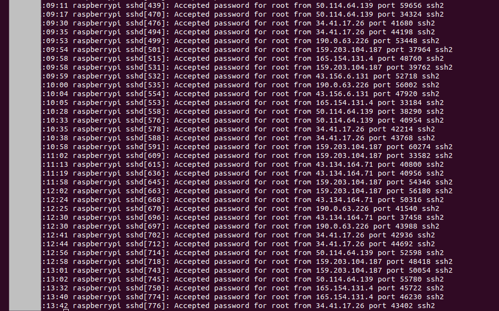

What
After detecting failed login attempts at my SSH server let’s setup a fake SSH server (a honeypot) and see what these bot are upto.

Contents
When
There are dedicated Honeypot tools that simulate servers, but we can also setup our own in about half an hour.
Why
After the sequence of coordinated bruteforce attacks on my SSH server I’m very much interested in where they came from and what the attacking botnet would have attempted on my servers.
Background
Types of Honeypots
After some reasearch I’ve found a number of SSH-Honeypots written in Python that simulate an SSH-Server.
The goal is to run a fake server that an attacker or attacking botnet then connects to and log his or it’s actions.
Tarpits
A simple effective method to delay attackers is to use a tarpit. A tarpit slows down an attacker by responsing extremly slowly. Effectivly DOS’ing (Denial of Service) the attacker.
High/Mid/Low Interaction Honeypots
An SSH-Honeypot can have varying levels of capabilities. A low interaction HoneyPot will only log attemps whereas a high interaction will let the intruder access a sandbox system and then evaluate his actions.
“High” Interaction
There are several high interaction honeypots available.
- Kojoney2
- Cowrie [1]
- Kippo [2]
Cowrie can be setup quickly by docker
docker run -p 2222:2222 cowrie/cowrie:latest -v cowrie-etc:/cowrie/cowrie-git/etc -v cowrie-var:/cowrie/cowrie-git/var
ssh -p 2222 root@localhost
There are also ready-made VMWare images [2] loaded with Honeypots such as Crowrie.
Real Qemu System
I thought about using Kojoney, Cowrie or similar Honeypots, but found that they only support a very limited set of commands.
An attacker would easily detect such a honeypot by simply running “uname”, looking at processor details “cat /proc/cpuinfo” or any other dead giveaway that it isn’t a real system. That may alter the behaviour of the attacker.
Instead I want to run a real server in QEmu on an isolated network to make the system look as real as possible to the attacker.
How
Setup Honeypot Machine in Qemu
Note that we will setup a real Debian system without an protection, so be sure to isolate it from your network.
Create Qemu image and boot Debian
wget https://cdimage.debian.org/debian-cd/current/amd64/iso-cd/debian-12.5.0-amd64-netinst.iso
qemu-img create -f qcow2 hda.qcow 10G
qemu-system-x86_64 -hda hda.qcow -cdrom debian-12.5.0-amd64-netinst.iso -boot d -m 512
Note: ctrl+alt+g releases the mouse from Qemu windows.
Perform standard install
Will go into ncurses installer due to low-memory as we’ve set only 512mb of RAM, this is fine.
Total installation took about 20 minutes here, but that may vary depending on your internet connection due to it being a net installation that downloads the packages.
- continent or region
- country
- language
- name: raspberrypi, domain: empty
- root password: 12345 (purposely weak)
- user jason, password 12345 (purposely weak)
- partition, guided, use entire disk, all files in one partition, finish & write changes to disk
Takes some time to install.
- install only system utilities, not graphical desktop - for a quick installation
- install grub bootloader, select /dev/sda
Boot it
qemu-system-x86_64 -hda hda.qcow -m 512
Login with above credentials.
Check internet connection
ping 8.8.8.8
Networking
We need to make the Qemu machine accessable on the local network so we can forward a port to it from our internet router.
Default configuration is Host-Only
Running
/sbin/ifconfig
you’ll find the system has an IP-Adresse like “10.0.2.15”. This is host only and inaccessable from the router, we need to enable bridged networking.
Setup bridged networking
On the Host
sudo brctl addbr virtbr0
sudo brctl addif virtbr0 enp7s0
sudo ip addr add 192.168.0.20/24 dev virtbr0
sudo ip link set virtbr0 up
sudo iptables -I FORWARD -m physdev --physdev-is-bridged -j ACCEPT
Check
sudo brctl show
virtbr0 8000.16a021033ae1 no enp7s0
Configure QEmu bridge helper
echo "allow all" | sudo tee /etc/qemu/${USER}.conf
echo "include /etc/qemu/${USER}.conf" | sudo tee --append /etc/qemu/bridge.conf
sudo chown root:${USER} /etc/qemu/${USER}.conf
sudo chmod 640 /etc/qemu/${USER}.conf
Verify Networking
Run Qemu
qemu-system-x86_64 -hda hda.qcow -m 512 -net nic,model=virtio,macaddr=52:54:00:00:00:01 -net bridge,br=virtbr0
/sbin/ifconfig
will now how an IP-Adress on your network.
Mounting/Unmounting the Qemu Disk
To adjust configurations and analyse the disk images after incidents it’s good to know how to mount and unmount the disk.
sudo modprobe nbd max_part=8
sudo qemu-nbd --connect=/dev/nbd0 hda.qcow
sudo mount /dev/nbd0p1 /mnt/tmp
to unmount
sudo umount /mnt/tmp
sudo qemu-nbd --disconnect /dev/nbd0
SSH-Server
The heart of our honeypot is the SSH-Server. Let’s install it and then weaken it to accept any password.
First install the SSH server
su
apt update
apt install -y openssh-server
systemctl enable ssh
apt install -y net-tools # for ifconfig
Allow SSH access through firewall.
su
apt install -y ufw
/sbin/ufw allow ssh
Weaken
To allow any password on first try we modify the authentication settings.
The pam authentication configuration is a bit hard to understand at first glance.
The authentication daemon will go through the file line by line and load shared objects (*.so) that return “success” or “failure”. Depending on order and whether lines are marked “required”, “sufficient” or “requisite” it may accept, ignore or only accept a login with a certain combination of successes against further authentication modules.
That and the significance of this file makes the configuration a bit daunting.
It’s actually quite elegant as the flexibility of this configuration allows scenarios where, for instance, if you have a biometric finger print scanner and you’d like to additionally authenticate with a password. Perhaps a user should be able to use a smart card in combination with an iris scanner instead. This configuration file allows for all of these combinations and the shared objects can be libraries interfacing with external authentication devices.
With that knowledge we can simply add as the first line of the file and the system will let anyone in, with any username or password. Normally this would be absolute madness, but perfect for our honeypot.
Following [5,7] we can configure the SSH-Server to allow any password
Leave common-auth as is, similar to:
apt install vim
sudo vim /mnt/tmp/etc/pam.d/common-auth
auth [success=1 default=ignore] pam_unix.so nullok
auth requisite pam_deny.so
auth required pam_permit.so
But repllace pam.d/sshd
sudo mv /mnt/tmp/etc/pam.d/sshd /mnt/tmp/etc/pam.d/sshd.bak
sudo vim /mnt/tmp/etc/pam.d/sshd
auth required pam_permit.so
and allow root logins on the ssh daemon
vim /mnt/tmp/etc/ssh/sshd_config
PermitRootLogin yes
Test
Now anyone can login with
ssh jason@<ip-address>
or even
ssh root@<ip-address>
and any password
Risks
Researching bots I’ve found information about an exploit on Fritz!Box Routers [16]. These are really common. There have also been security vulnerabilities with the Philips Hue bridges [17].
Normally these type of exploits are not that risky as control ports of the devices are usually only exposed to the internal network.
But if you’re running a honeypot and a worm spreads inside your network and reaches your devices from the internal network and uses an unpatched vulnerability, then you’ve got an infiltration at your devices. Modern botnets seem to persist only in memory, but routers, smarthome bridges and other IoT devices rarely get rebooted.
So it’s important to isolate the honeypot from the entire rest of the network and also make sure it can’t reach configuration pages of your devices.
Going live
With all that configured let’s go live.
To be safe make sure there’s nothing else accessable on the local network and then
- while running wireshark to monitor connections
- forward the ssh port from the internet router to the IP-address of the honeypot Qemu box.
On my router I forward a random TCP IPv4 port to port 22 on the Qemu machine
Progress
Results
Already after a few minutes we get successful logins.
I’ll analyse the findings in the next post.
1] https://github.com/cowrie/cowrie 2] https://bruteforce.gr/announcing-honeybox/ 3] https://github.com/MegaManSec/SSH-Snake 4] https://github.com/desaster/kippo 5] https://unix.stackexchange.com/questions/330120/how-to-add-a-user-that-accept-any-password-as-a-valid-password 6] https://github.com/cardigliano/wireshark-fritzbox/tree/master 7] https://serverfault.com/questions/618953/accept-any-ssh-connection-irrespective-of-client-key